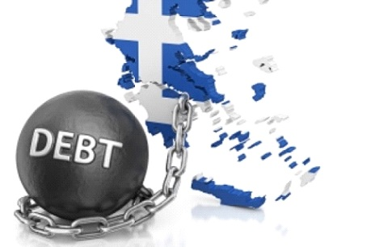
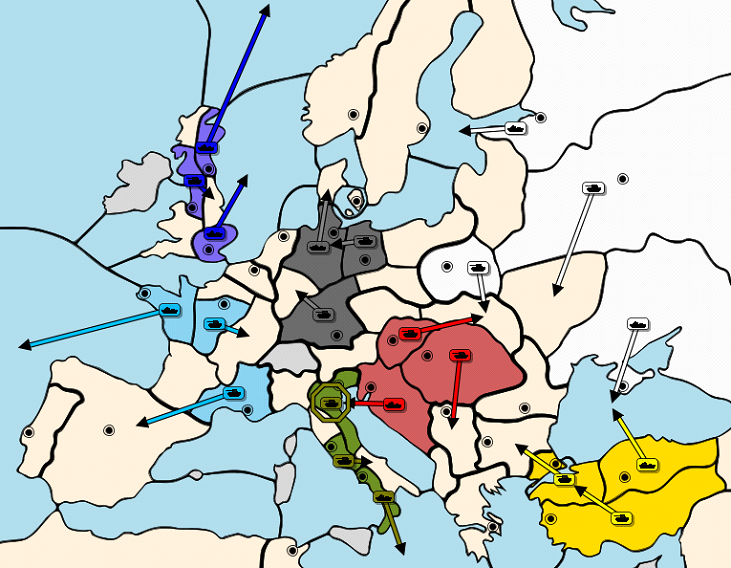
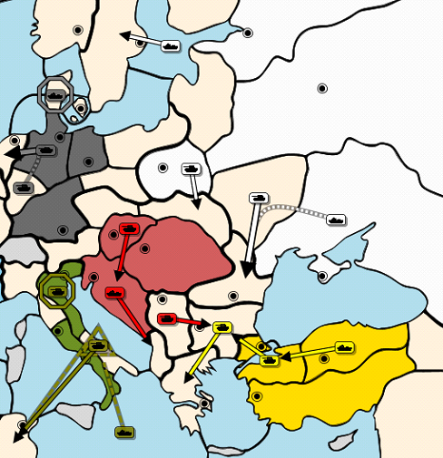

Umble The Heep is the nickname of a very productive young man who has recently started a Diplomacy website called Diplomacy Briefing. Access the site to sign up for his weekly newsletter on all things Diplomacy.

Greece’s importance upon western civilization cannot be disputed. Philosophy, literature, mathematics, politics, and the arts have all been enriched by Greek culture. Greece was also a player on the world stage. During the 4th century BC, Philip II was able to unite the Grecian city-states through military conquest and yes, diplomacy. It was left to his son Alexander the Great to continue this period of conquest which he did successfully. Today, the nation of Greece resembles little of that once mighty kingdom. This was especially seen in 2009 when Greece experienced a monumental debt crisis. The depression they experienced was worse than even the American Great Depression of the 1930’s. To keep the nation afloat required three bailouts by European banks over the next 10 years and the Greek economy has still not recovered. This situation has made Greece a controversial nation. Some even were adamant that Greece wasn’t worth bailing out. Within the Diplomacy world, Greece is often a coveted center but also one that brings conflict for its neighbors. It is an early flashpoint where Italy, Austria, and Turkey converge. What happens with Greece in the first 2 years often dictates the alliances for the rest of the game. This is especially true when it comes to Austria. It is usually assumed that Greece is Austria’s territory. But the question Austria should ask itself is whether Greece is worth it in the larger picture of the game. Early Goals for AustriaLiving – Not dying is the #1 concern for any Austrian player. No country is eaten alive faster and as often as Austria. He is often already a bit player by 1902. The rest of the game, he is then sidelined as a junior partner to some other power. Because of this, defensive openings should be the norm. Many people prefer gambits but then again greed is often the downfall for diplomacy players. If you make grabbing Greece a priority than your back will be exposed in 1901. I would encourage you to avoid openings that leave Trieste/Galicia open. I suppose there are times when you are sure that you’ve locked in Italy or Russia as an ally, but the truth is good players can get you to believe anything. Selling your soul pre-1901 is foolish in my opinion when you haven’t seen any moves. Make a decision to live in spring 01. An Ally – While beginners often see center growth as the main objective, experienced players know better. What Austria needs most is a solid ally. You can tactically make spectacular moves and grow to 5 or even 6 centers, but if you haven’t locked in an ally you will not go far. Your opening moves should be ones that are defensive, yet give you flexibility to choose an ally in the Fall. Russian/Turkish Conflict – You preferably want Turkey and Russia fighting. This will give you your choice of an ally and ensures your survival as long as Italy doesn’t plunge his knife into your back. Offering Russia the opportunity to focus elsewhere while getting a few centers as A/I crushes Turkey is a good offer. Austria though has little to entice Turkey in a stable alliance. Rumania and Sevastopol are often the go to centers but those create clunky and unwieldy defensive lines and unit placement almost demands a stab by 1904. What then can Austria offer to entice Turkey into a long-term alliance? The answer is Greece. The Grecian CarrotTo Turkey, Greece is that rare exotic fruit (or vegetable) that is seldom tasted in the first 3 years. To be offered it right away builds good will and hopefully a committed alliance. The deal would be Rumania for Austria in Fall 01 (if Turkey can grab the Black Sea) or 1902. This creates a good sphere of influence that allows Austria to focus on Russia while Turkey can focus on Italy. Both of their fleets can help each other in their respective theatres. This arrangement creates a strong early game alliance where both will profit. If you decide to go with Italy, he will be grateful for an extra dot considering it is often 1904 before he gets into Turkey for his fifth center. In exchange, you should get supported into Bulgaria posthaste. This arrangement is especially helpful in an AIR alliance (in fact it is probably unwise to give up Greece if you are facing a juggernaut because you will need that army build). The danger in an AIR alliance is that Austria is often next on the menu after Turkey. The wise Austrian then must be ready to take back Greece and move on Trieste before he is sandwiched between the wintergreen. Moving on Russia is also an option. Austria should have his choice because both Italy and Russia will be overextended as they do the lion share of the work to take down Turkey. Make your move and solidify your alliance with the other. Opening NegotiationsMy preferred opening for this strategy is the southern hedgehog (Tri-Ven, Vie-Gal, Bud-Ser). This allows for a strong defense while signaling to both Italy and Turkey that Greece will not be your focus and is open for negotiations.

Spring 01: The Southern Hedgehog Tri-Ven – It is vital that you tell Italy that you are moving Tri-Ven so you do not create ill will early on. On your side, the main reason for the move is to ward off the dreaded Tyrolia attack (Ven-Tyr, Rom-Ven, Nap-Ion). You can tell Italy that it can be used as a deception to Turkey. Moving tri-ven should not be a controversial move. If Italy protests, you have even more reason to do it. The hope is to be able to move F Tri-Alb in the fall. This is especially doable if you have gotten Italy to do Rom-Ven and Ven-Apu in the spring. Vie-Gal – Depending on how aggressive you are, you could try to dmz Galicia with Russia and move there to take it anyway. This creates a great possibility of moving to Warsaw or supporting Galicia to Rumania in the Fall from Serbia. If Turkey has gotten into the Black Sea than Rumania is pretty much guaranteed. If you choose to setup a bounce with Russia than A Vie-Tri in the fall allows F Tri-Alb without worry. Bud-Ser – This of course guarantees your build while also giving you the option to support an Italian convoy or Turkish move to Greece. I need to stress how important this move is. If you do not get a build in 01, you are significantly behind the 8 ball and a 3 center Austria loses much negotiation power and makes itself a target. Grab the build. DangersThe great risk is super-powering a juggernaut alliance. This is of course where diplomacy comes in. For this plan to work you need to have established a Turkish/Russian conflict. If not, you should be very careful about giving Turkey Greece in 1901.

Fall 01: Staying alert If you sniff out a juggernaut alliance coming, there are options for the fall. A Ser-Bul bounces Con-Bul and thus isolates the Turkish army in Greece. You can then support your Albanian fleet into Greece in Spring 02. Because of this, you aren’t really giving up Greece at all. ConclusionHopefully this article has helped you see that Greece is valuable diplomatically in the early game. While many players treat Greece like Gollum with the ring, you should be wiser. As Austria you need to use your first few years for surviving and building your alliance rather than dot grabbing. Then you can be one who snatches the precious and pushes your trusted ally into the fiery river of Mount Doom.
If you wish to e-mail feedback on this article to the author, and clicking
on the envelope above does not work for you, feel free to use the
|